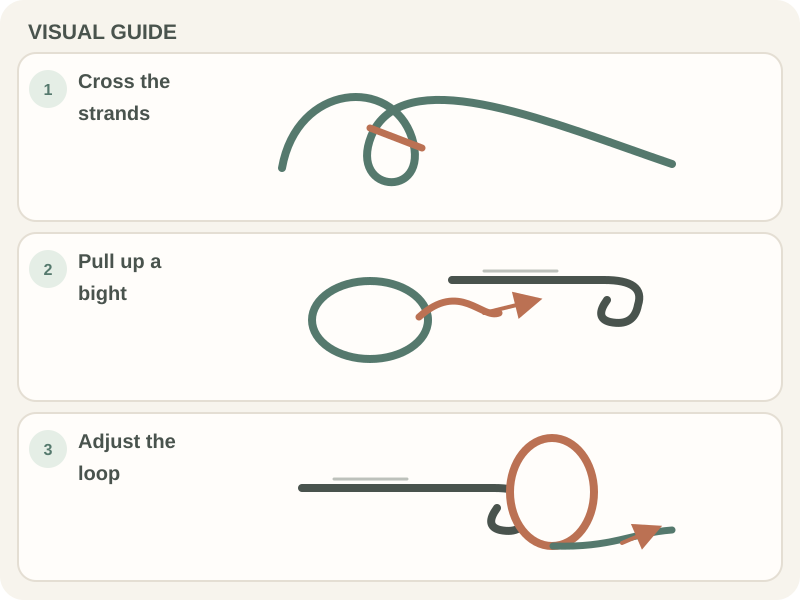

Crochet Basics · Beginner guide
How to Make a Slip Knot for Crochet
Make a starter loop that tightens around the hook but still slides easily.

Short answer: A crochet slip knot makes the adjustable loop that starts most projects. After placing it on the hook, snug it just enough to stay in place while still sliding along the shaft.
Before you begin
You need a crochet hook and a piece of yarn. Leave a tail long enough to weave in later; the working strand remains attached to the ball.
A slip knot is a starting loop, not a chain stitch. Most patterns do not count it in the foundation-chain stitch count.
Step-by-step instructions
- Step 1: Lay the yarn across your palm with the tail toward you and the working strand leading to the ball. Cross the tail over the working strand to form a loop.
- Step 2: Slide the hook under the strand connected to the ball at the crossing. Catch that strand with the hook.
- Step 3: Pull a small bight (a folded section of yarn) through the loop to make a new loop on the hook.
- Step 4: Hold the tail and working strand, then gently snug the knot. Adjust it so the loop slides on the hook without falling off.

How to check your work
The knot should sit below the hook head, with one loop on the shaft. Slide the loop forward and back; it should move without needing force.
The short tail should remain outside the loop. If the knot locks or the loop cannot move, loosen it or undo it and try again.
Common beginner problems
- If the loop tightens into a hard knot, you may have pulled the tail before the new bight was through. Undo it and pull a folded section of the working strand through the crossing.
- If the knot will not slide on the hook, ease the yarn around the knot instead of pulling the loop over the hook head.
- If the tail is too short to weave in later, undo the knot and start again with a longer tail.
Choosing yarn for a slip knot
Smooth, light-colored yarn makes the crossing and new loop easier to see. Fuzzy or highly textured yarn can hide the strands while you learn.
Use the hook size suggested on the yarn label and leave a tail long enough to weave in when the project is finished.
Practice plan
Make the knot several times until you can see which strand forms the adjustable loop. The loop should move on the hook while the knot stays below it.
When it slides comfortably, continue with the foundation chain.
Quick summary
- Cross the tail over the working strand to make a loop.
- Pull a bight of working yarn through the loop.
- Adjust the new loop so it moves freely on the hook.
Remember: The slip knot starts the work; the tail remains loose and is secured during finishing.
Frequently asked questions
Does the slip knot count as the first chain?
Usually no. The loop on the hook and the slip knot are not chain stitches; count the chain stitches you make after the knot.
Which strand is the working yarn?
It is the strand connected to the ball of yarn. The tail is the loose end.
Should the slip knot be tight on the hook?
No. Snug it so it stays in place, but leave enough room for it to slide along the hook shaft.